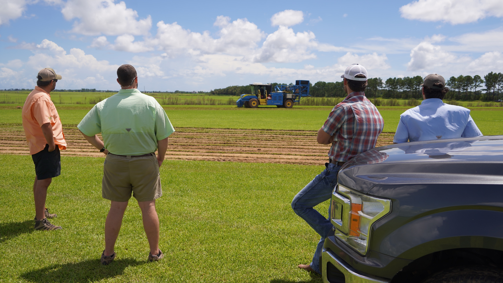
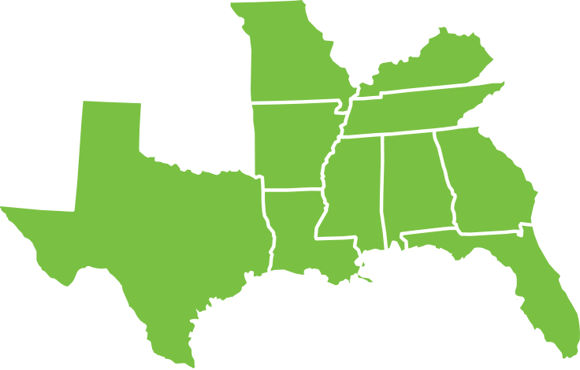

Safety & Stewardship
We take care of each other, our communities, and the land and water, which sustain us all.

At GreenPoint Ag, we are a farmer‑owned agricultural input supplier — financially strong businesses coming together to better serve farmers and rural communities of the Southeast.
We are a top 7 wholesale and retail agronomy company with more than $1 billion in sales. We service farms and rural businesses with crop nutrients, crop protection products, seed, and professional products. We also offer the latest in seed, fertilizer, data sampling, custom application, and a full array of agronomic services across our footprint.
Headquartered in Decatur, AL, GreenPoint Ag has 101 retail and wholesale agronomy locations across Alabama, Arkansas, Florida, Georgia, Kentucky, Louisiana, Mississippi, Missouri, Tennessee, and Texas, with a regional office in Lafayette, Tennessee.
Our parent companies include Alabama Farmers Cooperative (AFC), Tennessee Farmers Cooperative (TFC), WinField Solutions, Tipton Farmers Cooperative, and Tri‑County Farmers Association.

To Help Our Customers Succeed In An Ever-Changing World.
We take care of each other, our communities, and the land and water, which sustain us all.
We partner to innovate and create value.
We work together to achieve more.
We constantly strive to improve our performance and ourselves.
From farmer cooperatives to a 10-state agronomy partner — the moments that built GreenPoint Ag.
Alabama Farmers Cooperative is founded so growers can secure dependable, quality seed and supplies.
Tennessee Farmers Cooperative forms, expanding the network of farmer-owned supply across the Southeast.
AFC and TFC begin combining wholesale and retail agronomy operations to better serve growers across the South.
WinField United, Alabama Farmers Cooperative, and Tennessee Farmers Cooperative bring three strong organizations together under a new banner.
GreenPoint Ag operates 101 retail and wholesale agronomy locations across 10 states — with more than $1B in sales.
A top-7 wholesale and retail agronomy company — investing in precision tools, automation, and the next generation of growers.
The same story, side by side — scroll the line to walk through nine decades of farmer-first agronomy.
Alabama Farmers Cooperative is founded so growers can secure dependable, quality seed and supplies.
Tennessee Farmers Cooperative forms, expanding the network of farmer-owned supply across the Southeast.
AFC and TFC begin combining wholesale and retail agronomy operations to better serve growers across the South.
WinField United, Alabama Farmers Cooperative, and Tennessee Farmers Cooperative bring three strong organizations together under a new banner.
GreenPoint Ag operates 101 retail and wholesale agronomy locations across 10 states — with more than $1B in sales.
A top-7 wholesale and retail agronomy company — investing in precision tools, automation, and the next generation of growers.